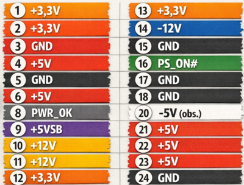

📘 AULA 03 — PINAGEM E FUNÇÃO DOS CONECTORES DA FONTE
🔹 Convenção de Cores dos Fios (Padrão ATX)
Antes de analisar cada conector, é essencial conhecer a convenção de cores adotada pelo padrão ATX. Ela é universal entre fabricantes e permite identificar rapidamente a função de qualquer fio.
| Cor do fio | Tensão / Sinal | Função |
|---|---|---|
| Amarelo | +12V | Alimentação de alta potência (CPU, GPU, motores) |
| Vermelho | +5V | Alimentação intermediária (USB, lógica) |
| Laranja | +3,3V | Alimentação de circuitos sensíveis (chipset, RAM) |
| Azul | -12V | Circuitos legados (portas seriais RS-232) |
| Branco | -5V | Obsoleto (removido no ATX 2.01+) |
| Roxo | +5V Standby (VSB) | Energia em modo de espera; mantém Wake-on-LAN, USB |
| Verde | PS_ON# | Sinal de ligar: curto com GND aciona a fonte |
| Cinza | PWR_OK | Sinal de "energia estável" enviado à placa-mãe |
| Preto | GND (terra) | Referência de retorno para todos os trilhos |
💡 O fio roxo (+5VSB) é o único que permanece energizado enquanto o computador está desligado mas plugado na tomada. É ele que permite o Wake-on-LAN e carrega dispositivos USB em modo de espera.
💡 O fio verde (PS_ON#) é o que a placa-mãe aciona ao receber o comando de ligar. Em bancada, curto-circuitar o verde com qualquer preto é o método para testar uma fonte fora do computador.
🔹 Conector ATX Principal — 24 Pinos
Função geral
Alimenta a placa-mãe com todos os trilhos de tensão simultaneamente. É a principal interface elétrica entre a fonte e o sistema.
Pinagem (layout 2×12)

⚠️ Conectores mais antigos eram de 20 pinos (ATX 1.x). Os pinos 11, 12, 23 e 24 foram adicionados no ATX 2.x para suportar maior demanda no trilho +12V. Placas ATX 20 pinos aceitam o conector 24 pinos encaixado parcialmente, mas com limitação de corrente.
Grupos funcionais
| Grupo | Pinos | Função na placa-mãe |
|---|---|---|
| +3,3V | 1, 2, 12, 13 | Alimenta chipset, slots PCI, memória RAM |
| +5V | 4, 6, 21, 22, 23 | Alimenta controladores USB, drives, lógica geral |
| +12V | 10, 11 | Alimenta reguladores de tensão (VRM) da CPU e outros circuitos de alta potência |
| GND | 3, 5, 7, 15, 17, 18, 19, 24 | Retorno elétrico de todos os trilhos |
| Sinais | 8 (PWR_OK), 9 (+5VSB), 16 (PS_ON#) | Controle de inicialização e standby |
Implicações práticas
- Se o trilho +3,3V estiver instável: erros de memória RAM, falhas em slots PCI/PCIe.
- Se o trilho +5V estiver instável: problemas em USB, comportamento errático de periféricos.
- Se o trilho +12V estiver subfornecido: instabilidade de CPU, travamentos sob carga.
- Se o PWR_OK não subir: a placa-mãe não completa o POST, mesmo com os demais trilhos corretos.
🔹 Conector CPU / EPS — 4 e 8 Pinos
Função geral
Fornece energia exclusivamente ao VRM (Voltage Regulator Module) da placa-mãe, que converte a tensão para o nível exigido pelo processador (geralmente 0,8V–1,5V). Este conector é dedicado ao trilho +12V.
Por que existe um conector separado para a CPU?
O conector ATX 24 pinos distribui +12V pela placa-mãe de forma geral, mas a demanda do processador moderno é alta e concentrada. Um conector dedicado garante entrega direta de corrente ao VRM sem sobrecarregar o caminho elétrico principal.
Pinagem — Conector 4 pinos (ATX12V)
| Pino | Cor | Tensão |
|---|---|---|
| 1 | Preto | GND |
| 2 | Preto | GND |
| 3 | Amarelo | +12V |
| 4 | Amarelo | +12V |
Pinagem — Conector 8 pinos (EPS12V)
| Pino | Cor | Tensão |
|---|---|---|
| 1 | Preto | GND |
| 2 | Preto | GND |
| 3 | Preto | GND |
| 4 | Preto | GND |
| 5 | Amarelo | +12V |
| 6 | Amarelo | +12V |
| 7 | Amarelo | +12V |
| 8 | Amarelo | +12V |
💡 O conector 8 pinos é formado por dois blocos de 4 pinos. Muitas fontes fornecem o cabo EPS como dois conectores 4+4, permitindo usar 4 pinos em placas básicas e 8 pinos em placas de alto desempenho.
⚠️ Algumas placas entusiastas (workstation, overclocking) possuem conector 4+4+4+4 (16 pinos), exigindo fontes específicas com esse cabo.
Implicações práticas
- Ausência do conector CPU: a maioria das placas-mãe não completa o POST. O sistema não inicia.
- Conector 4 pinos em placa que exige 8 pinos: o sistema pode iniciar, mas instabilidade ou throttling sob carga são esperados.
- Fonte sem cabo EPS 8 pinos: problema comum em fontes genéricas ou antigas; exige adaptador Molex → EPS, o que é tecnicamente desaconselhável.
🔹 Conector SATA Power — 15 Pinos
Função geral
Alimenta HDs, SSDs SATA e drives ópticos. Substituiu o conector Molex de 4 pinos como padrão para dispositivos de armazenamento.
Pinagem
| Pino | Cor | Tensão | Função |
|---|---|---|---|
| 1-3 | Laranja | +3,3V | Lógica de controle, circuitos internos |
| 4-6 | Preto | GND | Retorno elétrico |
| 7-9 | Vermelho | +5V | Eletrônica de controle, circuitos auxiliares |
| 10-12 | Preto | GND | Retorno elétrico |
| 13-15 | Amarelo | +12V | Motor de rotação (HDDs), não utilizado em SSDs |
💡 SSDs SATA geralmente utilizam apenas os trilhos +3,3V e +5V. HDDs utilizam também o +12V para acionar o motor de rotação do prato.
⚠️ O pino 3 (+3,3V) em alguns SSDs aciona o modo de power disable se energizado inesperadamente. Em adaptadores Molex → SATA, esse pino pode não ser implementado corretamente, causando falha de inicialização do dispositivo.
Implicações práticas
- Instabilidade em HD: verificar trilho +12V (motor) e +5V (eletrônica).
- SSD não reconhecido após adaptador Molex→SATA: provável problema no pino 3 (+3,3V).
🔹 Conector SATA — 4 Pinos
Função geral
Alimenta HD, SSD, DVD e alguns dispositivos em gabinetes compactos e all-in-ones. É uma versão reduzida do conector SATA Power de 15 pinos, presente na maioria das fontes ATX modernas em quantidade de dois ou mais cabos.
Pinagem
| Pino | Cor | Tensão | Função |
|---|---|---|---|
| 1 | Vermelho | +5V | Eletrônica de controle, circuitos auxiliares |
| 2 | Preto | GND | Retorno elétrico |
| 3 | Preto | GND | Retorno elétrico |
| 4 | Amarelo | +12V | Motor de rotação (HDDs), não utilizado em SSDs |
💡 Diferente do SATA Power 15 pinos, este conector não possui o trilho +3,3V. Dispositivos que dependem desse trilho (como alguns SSDs) não devem ser alimentados por ele.
⚠️ O conector SATA slim é fisicamente menor e possui travas frágeis. Forçar a inserção invertida danifica tanto o conector quanto o dispositivo — verificar orientação antes de encaixar.
Implicações práticas
- Drive óptico slim não reconhecido: verificar trilho +5V no conector e integridade do cabo de dados SATA separadamente.
- Uso em gabinetes compactos: é comum encontrar este conector em builds mini-ITX e HTPCs, onde drives slim são padrão.
🔹 Conector PCIe — 6 e 8 Pinos
Função geral
Alimenta placas de vídeo dedicadas diretamente pela fonte, complementando a energia fornecida pelo slot PCIe da placa-mãe (que entrega no máximo 75W).
Capacidade por conector
| Conector | Potência máxima adicional |
|---|---|
| 6 pinos | 75W |
| 8 pinos | 150W |
| 6+8 pinos | 225W |
| 8+8 pinos | 300W |
Pinagem — 6 pinos
| Pino | Cor | Tensão |
|---|---|---|
| 1-3 | Amarelo | +12V |
| 4-6 | Preto | GND |
Pinagem — 8 pinos (6+2)
| Pino | Cor | Tensão |
|---|---|---|
| 1-3 | Amarelo | +12V |
| 4-6 | Preto | GND |
| 7 | Preto | GND (sense) |
| 8 | Preto | GND (sense) |
💡 Os dois pinos extras do conector 8 pinos (7 e 8) são sinais de detecção que informam à GPU quantos pinos estão conectados, permitindo que ela ajuste seu TDP máximo.
⚠️ Conectar uma GPU de alto consumo com apenas um dos conectores necessários resulta em: artefatos visuais, crashes em jogos/renderização, ou desligamento por proteção da própria GPU.
Implicações práticas
- GPU com dois conectores 8 pinos e fonte com apenas um cabo PCIe: limitação de potência; desempenho reduzido ou instabilidade.
- Adaptadores Molex → PCIe: solução emergencial não recomendada para GPUs acima de 75W — risco de sobrecarga nos fios Molex.
🔹 Conector Molex — 4 Pinos (AMP/Molex)
Função geral
Conector legado, ainda presente em fontes modernas para retrocompatibilidade. Utilizado em coolers de 12V, barramentos de adaptadores e alguns gabinetes.
Pinagem
| Pino | Cor | Tensão |
|---|---|---|
| 1 | Amarelo | +12V |
| 2 | Preto | GND |
| 3 | Preto | GND |
| 4 | Vermelho | +5V |
⚠️ Molex não possui travas de retenção robustas. Em ambiente de vibração (servidores, sistemas com múltiplos HDDs), pode se desconectar. Verificar encaixe firme durante montagem.
🎯 Síntese do Anexo
| Conector | Trilhos presentes | O que alimenta | Sinal crítico |
|---|---|---|---|
| ATX 24 pinos | +12V, +5V, +3,3V, -12V, GND, sinais | Placa-mãe (geral) | PWR_OK, PS_ON#, +5VSB |
| CPU 4/8 pinos | +12V, GND | VRM da CPU | Ausência impede POST |
| SATA 15 pinos | +12V, +5V, +3,3V, GND | HDs, SSDs, ópticos | Pino 3 (+3,3V) em SSDs |
| PCIe 6/8 pinos | +12V, GND | GPU dedicada | Pinos sense (7,8) |
| Molex 4 pinos | +12V, +5V, GND | Dispositivos legados | — |
🔧 Regra prática de bancada: ao diagnosticar uma falha de inicialização, verificar nesta ordem: ATX 24 pinos encaixado → CPU 8 pinos conectado → PWR_OK no multímetro → trilhos sob carga com multímetro.